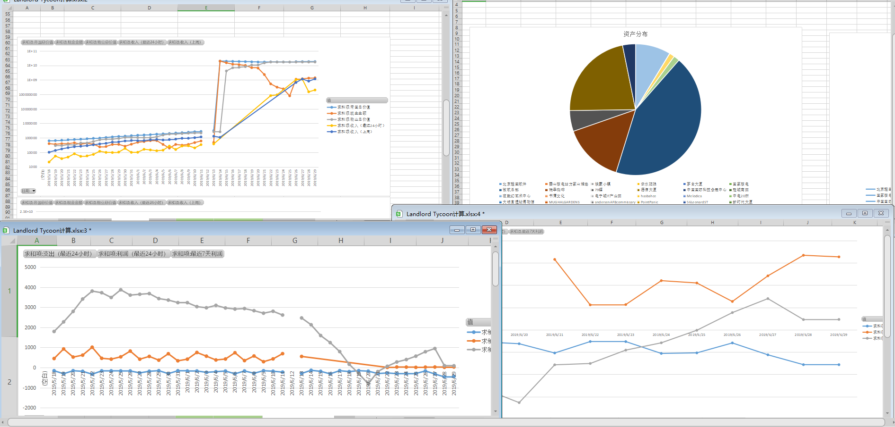

The FinalChapter
Here, I made a difficult decision, this data tracking and collection come to it's ending.
I have written a lot of essays describing details of LLT for a long time, now, I want to conclude what software and hardware used in the playing.
Excel or WPS
In this project, the data and calculation is stored in an .xlsx file, which could be opened and operated in M$ Office or WPS, in fact, I use both of them, they are compatible to each other

KeyPress simulation, 按键精灵
But, the inputting procedure is very boring and time consuming, I tried hard to find a way to accelerate this procedure. First, I do not choose Macro record and replay of Word or WPS themselves, the program coding is very difficult, so, I search for a keypress and mouse click simulation software tool, and I found it "按键精灵" very like "AutoHotKey", you can reinvent my script in AutoHotKey software.

this script is included in this LLT_Analysis project as the file "wps辅助录入llt数据.Q", The Chinese characters in use of the script GUI? you could change to source file mode to see the original code script and edit it
Type Writer Sound Effect software, Qwertick
Along side the auto press tool software, a sound effect of key pressing is needed, the software should simulate a type writer of old fashion, just like the Japanese Comic "Violet Ever Garden"

so, I found a tool named "Qwertick", it is very small and good listening. It's free and the website is in the snapshot:

I call it "Violet Ever Garden Simulator"

EarPhone
If you play the Violet Ever Garden simulator in public environment, you'll bother people around you, so, an earphone is needed, wired or Bluetooth earphone are both ok, if all people play sound out, the whole room will be a game bar like this:

104 keys full size keyboard
Another question, ctrl+page down, page up, left arrow, right arrow, etc, are not convenient on a compact keyboard, such as keyboard of a notebook, so, you need a full size 104 buttons keyboard,

you can press the right NumPad without looking away from your screen, If you do not like the full-size keyboard, you could select this:
separate numeric keypad for accounting use
For accounting use specifically, this keypad is portable and mini sized,

You could even put it left of your keyboard to press with your left hand, your right hand do not need to leave your mouse, just like the "Hand on Throttle and Stick" HOTAS of fighter plane!

A little point, you should choose chip in side Num-Pad, so, it is standalone, work independently with your main keyboard on the NUM status controlling


Keyboard/Mouse Pressing sharing software, Mouse Without Border
I play LLT on my Notebook and change environment quite often, It's boring to unplug keyboard mouse cable here and plug there, so, I connect two computers via Wi-Fi, and share the full-size keyboard via the net to my notebook, the software is "Mouse Without Border" from Microsoft

It's NOT remote desktop software! they are two different things at all, remote desktop transfer the display streaming via network, but this keyboard/mouse pressing sharing software transfer only the messages of pressing, releasing, holding, dragging, such other events, I share my full size keyboard from my PC to my notebook, the configuration looks like this snapshot

you could drag the monitor left or right to correspond to your environment, just like the windows extended monitor configuration

This is what I configure for LLT, what is the portrait monitor?
portable multi-touch LCD screen

This photo is published long long ago in my blog, stand up on the desktop, run Android Phone simulator on it, multi-touch support, so, It is really like a phone! supporting all functions, especially for geography based applications, such as Google Earth, without multi-touch, you can not rotate the display with your mouse. Besides Google Earth and Landlord Tycoon, I installed Flight Radar 24 and Vessel Finder, as you can see in the photo. Which android simulator do I use?
Android Virtual Machine, BlueStack

I have tried quiet a few virtual machine software for android, and select BlueStack in the final. The reason is, its location simulation is excellent!

help me to travel all the world in Landlord Tycoon!
Fake GPS
No need of a special fake GPS software, location simulation is supported in BlueStack originally, if you play LLT on your real phone, you must go to Google Play to search for a fake GPS software.
FlightRadar 24
Do you like to buy an airport? to search for airport all around world, you'd better install FlightRadar24, the most often used software for aviation enthusiast, the snap shot above.
Vessel Finder
Do you like to buy a seaport, harbor, anchorage? to search for these all around world, you'd better install vessel finer, as you can see in this snapshot,

Also, you could find some airport un-public, by auto recognition of program in the source data of the application!
Google Earth
It's a great application and all people know it! to verify what a location on the map is, you'd better open Google Earth to see the image from satellite view, once the location emulated, you can change to your position in Google Earth by one touch
some ways to pass through net wall
If you are players in China or other nations that net wall exist, you should find a way to pass through it, on your real phone, or Android virtual machine, or PC, it is very complicated and there are a lot of details, It deserves of writing a long article include 1000000000000000000 words, so, here, I neglect the technique of pass through it, just tell you to need it.
Screen sharing software, SpaceDesk
sometimes, I change to another environment, there are two big displays side by side on the wall, plug in to a PC, so, I installed and configured a screen share software, Space Desk. Install the Space Desk driver on my simulation notebook, it installed and started a service here:

It is NOT remote desktop software too! install the Space Desk Viewer on the displaying PC and run it

search in your net for a running space desk driver server, and found my notebook

just select the server, it will connect and work! on my simulation use note book, I could see the connection here:

and the windows 10 OS take it as a real monitor and configuring at your will.

The final effect is here:

LLT down, in the Notebook, the Excel sheet up, on the two displays, see all the columns at one glance! this configuration of mine is not normal, a little trick needed, in the following snapshot of resolutions configuration

Other Screen Resolution, input number of 3840x10400 by hand, why not x1080? because I should leave space for the title bar of the window and the taskbar of the OS.
My articles about LLT in a list
I wrote a lot of blog articles about LLT, but not in English, so, in the era of the new Cold War nowadays, I decide not to show the list here.
How tycoon is me?
Now, I give up the game and end this excel sheet project, just public as a template for other players to record and analysis their data. What is the final ranking of me? This is my status

No rent income? I have sold out all my Properties and bought a lot of lands to increase my empire size, all my land is in Beijing China, I have tried my hard to get the mayor chair of Beijing before I quit this game, but I failed, because too many tycoons compete for capital mayor of major superpowers of the world, the value of my land is enough for me to be president of many countries of little power, ranking in global:

ranking in China main land,

I dropped from the 11 to this 12, and I am the second tycoon of Beijing, just one step away the mayor chair, but it is a big step.

GitHub
I like to write little script for myself, and GitHub is a good place to store my work, sharing my game experience to other players, enjoy yourselves !
Lyrics of this Song
紫罗兰永恒花园op《Sincerely》歌词【日语+罗马音+谐音空耳+中文翻译】

《Sincerely》
Japanese
知 ら な い 言葉 を 覚え て い く た び
お も か げ の な か 手 を 伸 ば す の
だ け ど 一人 で は 分 か ら な い 言葉 も
あ る の か も し れ な い
さ よ な ら は 苦 く て
愛 は 遠 いに お い が した
例え よ う の な い こ の 想い は
と て も 怖 く て
だ け ど と て も 愛お し く て
わ た し な ん で 泣 い て い る ん だ ろ う
心 に な ん て 答え た ら い い ？
言葉 は い つ て も 語 る で も な く た
そ こ に あ る ば か り つ の る ば か り
わ た し は あ な た に 会 い た く な る
き れ い な 言葉 は 覚え て い く た び
自分 の こ と が 嫌 に な り そ う
だ け ど 背 を 向 け ちゃ
い け な い 言葉 も
あ る の か も し れ な い
か な し み は 冷た く
あ り が と う は ぬ く も り に 色 づ く
形 の な い も の 触れ る た び に
あ な た の 声 が
胸 のお く で 響 い て い る の
はああああはああああ
書き か け て は や め た
あ て 先 の な い 手紙 は
風 に 揺れ る
届け た い 人 の 街 ま で
始まり の 終わり を 伝え る た め に
生き る こ と や め な い こ と
あ な た に 今日 を 誇 れ る よ う に
わ た し な ん で 泣 い て い る ん だ ろ う
心 に な ん て 答え た ら い い ？
言葉 は い つ で も 語 る で も な く て
そ こ に あ る ば か り つ の る ば か り
わ た し は あ な た に 会 い た く な る よ
Roma Phonetic notation
shi ra na i ko to ba wo o bo e te i ku ta bi
o mo ka ge no na ka te wo no ba su no
da ke do hi to ri de ha wa ka ra na i ko to ba mo
a ru no ka mo shi re na i
sa yo na ra wa ni ga ku te
a i shi te ru wa to o i ni o i ga shi ta
ta to e yo u no na i ko no o mo i wa
to te mo ko wa ku te
da ke do to te mo i to shi ku te
wa ta shi na n de na i te i ru n da ro u
ko ko ro ni na n te ko ta e ta ra i i
ko to ba wa i tsu de mo ka ta ru de mo na ku te
so ko ni a ru ba ka ri tsu no ru ba ka ri
wa ta shi ha a na ta ni a i ta ku na ru
ki re i na ko to ba wa o bo e te i ku ta bi
ji bu n no ko to ga iya ni na ri so u
da ke do se wo mu ke cha
i ke na i ko to ba mo
a ru no ka mo shi re na i
ka na shi mi wa tsu me ta ku
a ri ga to u wa nu ku mo ri ni iro zu ku
ka ta chi no na i mo no fu re ru ta bi ni
a na ta no ko e ga
mu ne no o ku de hi bi i te i ru no
ha a a a a ha a a a a
ka ki ka ke te wa ya me ta
a te sa ki no na i te ga mi wa
ka ze ni yu re ru
to do ke ta i hi tono ma chi ma de
ha ji ma ri no o wa ri wo tsu ta e ru ta me ni
i ki ru ko to ya me na i ko to
a na ta ni kyo u wo ho ko re ru yo u ni
wa ta shi na n de na i te i ru n da ro u
ko ko ro ni na n te ko ta e ta ra i i
ko to ba ha i tsu de mo ka ta ru de mo na ku te
so ko ni a ru ba ka ri tsu no ru ba ka ri
wa ta shi ha a na ta ni a i ta ku na ru yo
Chinese Phonetic notation
西那拉一 口头把我 哦都诶带有哭他臂
哦莫卡给no那卡 忒我no把苏no
打开都西拖粒得挖 哇咔啦耐口头把我
啊撸no卡不西耐那衣
撒呦那啦（再见）哇 你卡酷忒
阿姨洗铁路哇 投哦喂衣哦衣嘎西它
他投诶呦我no那衣 口no哦莫衣哇
头铁摸 哭哇哭忒
打开都 都忒摸衣投西哭忒
瓦达西难带 那衣忒路那路wo
口口咯你难带 口他诶他那衣
口头把哇一兹带猫 卡他撸被摸那哭忒
搜扣你啊路巴咖喱 苏no撸哇咖喱
瓦达西瓦 啊那打你 啊一哒库那撸
ki诶里那口头把哇 哦勾诶带有哭他臂
几步嗯no扣投嘎 一鸭你那里搜
打开都塞我木开插
一开那衣口头把摸
啊撸no卡不西耐那衣
卡那西米哇兹美他哭
阿里嘎多（谢谢）哇 努口摸里你一肉租哭
卡他几no那一莫no 浮re辱他逼你
啊那他no扣诶嘎
木内no哭得黑i比忒一辱 no～
啊啊啊啊啊啊
卡ki卡剋忒哇雅美哒
啊忒撒ki no那一忒嘎米哇
卡贼你辱内撸
头都剋他一黑i头no妈几麻袋
哈吉嘛里no 哦哇里喔 租他诶撸他妹你
一ki撸口头 呀没那衣口头喔
啊那他你k哟喔 吼口嘞路有你
瓦达西难带 那衣忒路那路wo
口口咯你难带 口他诶他那衣
口头把哇一兹带猫 卡他撸被摸那哭忒
搜扣你啊路巴咖喱 苏no撸哇咖喱
瓦达西瓦啊那打你 啊一哒库那撸哟～
Chinese lyrics
每当记忆陌生词汇
便会向旧时光景中伸出手
可若孤身一人 也许有些话语
难以领悟
离别总伤感
一声爱你遥不可及
这份思念难以言喻
我无比惶恐
却又无比怜惜
我为何在哭泣
该如何回应自己的内心
话语总是难以诉之于口
它们在心中不断积聚 愈发强烈
我愈发想要见到你
每当记忆华丽的词语
似乎便会讨厌自己
但若不去面对
也许有些话语
便会难以领悟
悲伤是如此冰冷
一声谢谢你为温暖着上色彩
每当感受无形之物
你的声音
便会在我内心深处回响
啊啊啊啊啊啊
尚未写完便被放弃的
那封没有目的地的信
在风中飘摇
飘向想要传达之人的身边
为了传达这起始的终结
生活着我不会放弃
为你 我努力做到以今天为傲
我为何在哭泣
该如何回应自己的内心
话语总是难以诉之于口
它们在心中不断积聚 愈发强烈
我愈发想要见到你